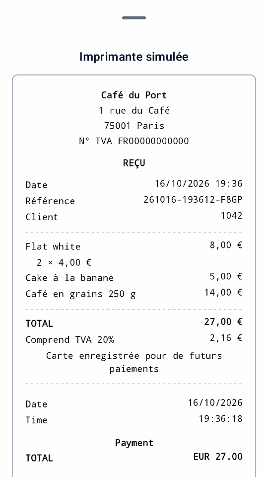
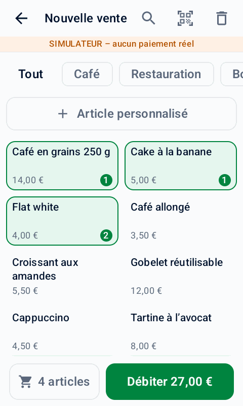
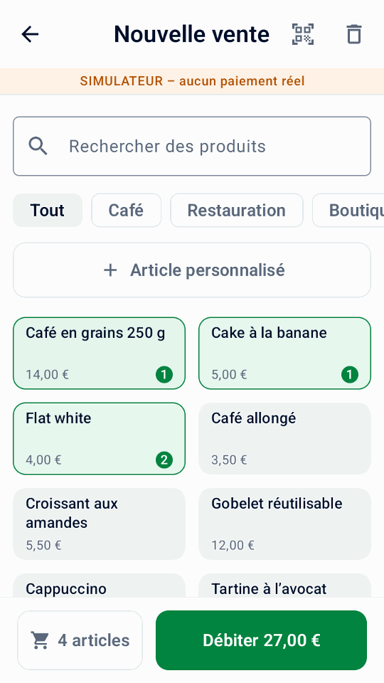
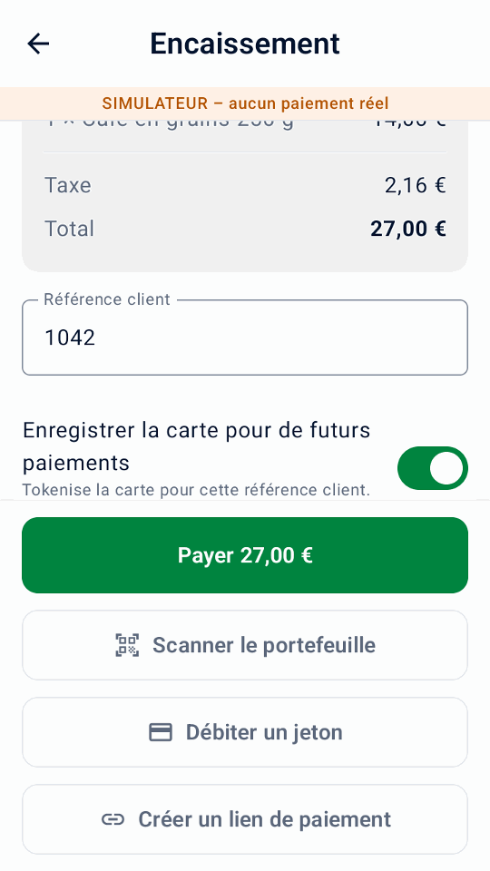
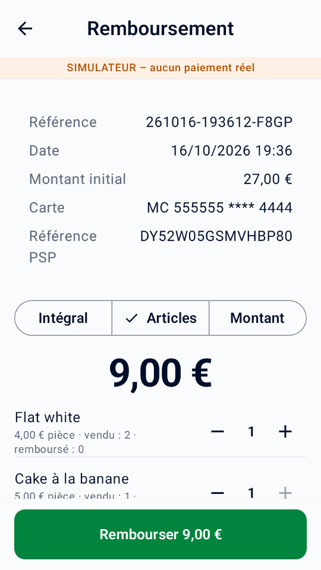
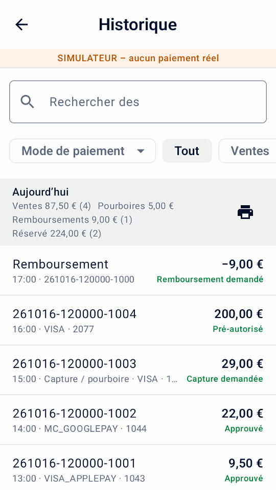
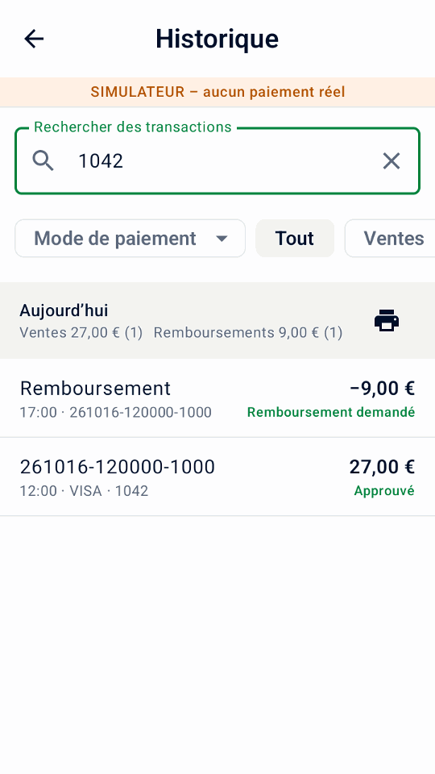
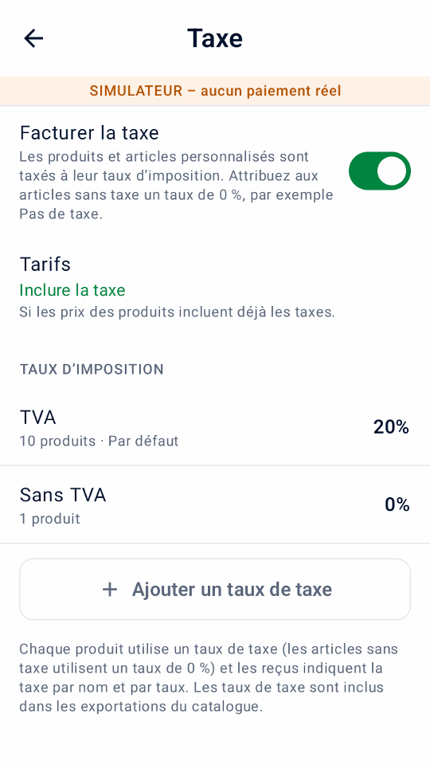
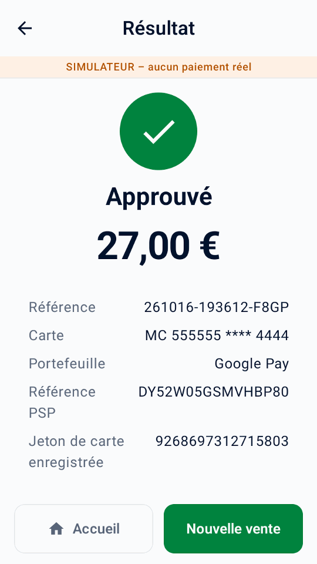

Démarrage rapide
Vérifiez les prérequis, installez, connectez-vous à Adyen et testez.
Gratuit et open source · fonctionne sur les terminaux Adyen Android
Mini mPOS fonctionne directement sur les terminaux Android d’Adyen : sélectionnez les produits, encaissez, imprimez ou envoyez les reçus par e-mail et remboursez en scannant le reçu. Un seul appareil suffit, sans caisse séparée, tablette supplémentaire ni abonnement à l’application. Vous préférez une tablette ou un téléphone ? Mini mPOS fonctionne aussi avec votre terminal de paiement ou Tap to Pay.


Vérifiez les prérequis, installez, connectez-vous à Adyen et testez.
Acceptez les paiements, remboursez, délivrez les reçus et clôturez la journée.
Résolvez les résultats inconnus, les refus, les problèmes de couplage, de réseau et d'imprimante.
D'un comptoir à plusieurs appareils dans les magasins, événements, livraisons et appels de service : produits, paiements, reçus et remboursements, sans back-office à gérer.
Les terminaux pris en charge offrent également paiements partiels, invites de l'acheteur, dons et saisie manuelle de la carte. Vérifier Capacités d'Adyen pour votre configuration et comparez l'activité locale avec totaux terminaux.
Conservez une liste de produits avec les prix, les catégories, les codes-barres et les taxes. Recherchez, filtrez, scannez un code-barres ou saisissez un montant personnalisé.
Effectuez des paiements par carte et portefeuille avec Adyen sur le terminal lui-même, ou depuis une tablette ou un téléphone équipé d'un terminal ou Tap to Pay.
Imprimez un reçu complet avec les détails de votre entreprise et un code de remboursement QR, envoyez-le par e-mail ou partagez-le depuis une tablette ou un téléphone.
Envoyez plutôt un lien de paiement : le client scanne son code QR ou l'ouvre depuis un e-mail, et paie sur la page de paiement d'Adyen.
Scannez le code QR présent sur le reçu, puis remboursez le tout, quelques articles ou un montant. Toujours lié au paiement initial.
Détenez un acompte pour une réservation ou une location. Encaissez le paiement plus tard, ajustez le montant ou libérez la retenue.
Sur un terminal pris en charge, laissez les acheteurs choisir un pourboire avant de payer, ou écrivez-en un sur un reçu imprimé pour le capturer plus tard.
Récupérez un pourboire du terminal · Récupérez un pourboire de reçu
Définissez vos propres taux de taxe, incluez la taxe dans les prix ou ajoutez-la au moment du paiement. Choisissez n’importe quelle devise prise en charge par Adyen.
Protégez le paramétrage avec un PIN administrateur et les actions de suivi financier avec un PIN responsable distinct. Les mots de passe et les clés restent cryptés.

Appuyez sur des produits ou saisissez un montant.

Ajoutez une référence et, avec votre consentement, enregistrez la carte.
Un seul bordereau avec tout, plus un code QR.

Scannez le reçu et choisissez ce que vous souhaitez rembourser.


Consultez les totaux quotidiens et trouvez les ventes, les remboursements et les dépôts en quelques clics.
Installé sur le terminal, Mini mPOS n'a besoin d'aucun autre matériel ni d'aucun backend pour fonctionner. Sur tablette ou téléphone, il fonctionne avec vos terminaux ou Tap to Pay.


Explorez le simulateur intégré sur un téléphone ou un émulateur Android, sans terminal de paiement.
Téléchargez l'application, placez-la sur vos terminaux via votre Adyen Customer Area (ou installez-la sur une tablette ou un téléphone) et numérisez vos clés à partir de l'aide à la configuration. Notre guide vous guide à travers tout cela.
Lire Démarrage rapide · Ouvrez l'assistant de configuration · Téléchargez l'application
Exécutez directement sur un terminal Adyen Android pour un paiement tout-en-un, ou utilisez une tablette ou un téléphone Android avec un terminal réseau, un terminal cloud ou un Tap to Pay. Voir exigences et choix de configuration. L'impression nécessite une imprimante ; la numérisation nécessite un appareil photo.
L'application est gratuite et open source sous la licence MIT. Les frais de traitement des paiements d'Adyen s'appliquent toujours.
Non. Mini mPOS n'est pas fabriqué, approuvé ou pris en charge par Adyen. Testez votre configuration dans l'environnement TEST d'Adyen avant de la mettre en ligne. Voir où obtenir de l'aide pour les questions sur l'application et Adyen.
Non. Les produits, les paramètres et l'historique restent sur chaque appareil. QR transfère les produits de copie et la configuration, pas l'historique des paiements ou les modifications en cours. Voir appareils et données.
Pas de serveur, mais chaque configuration de paiement réel nécessite les informations d'identification Checkout API. Les autres clés dépendent de la destination des paiements. Ils sont cryptés sur l'appareil, un compromis par rapport à la recommandation côté serveur d'Adyen. Suivre configuration de la connexion et les directives de sécurité là-bas.